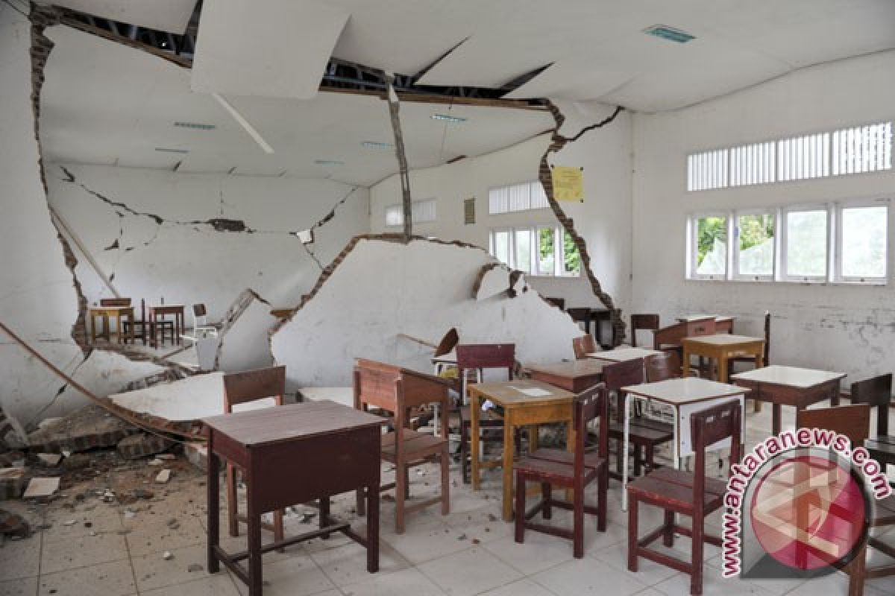
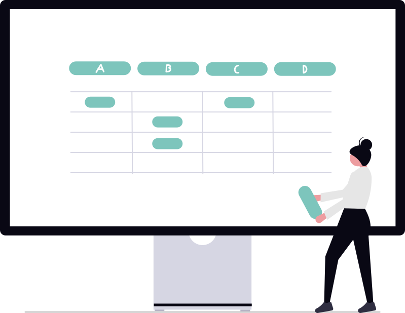
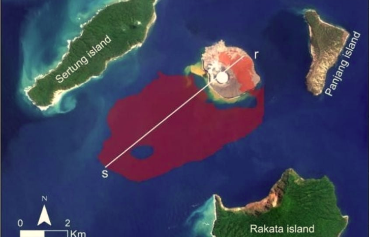

Academic

Kelas
Kondisi ruang kelas dinilai kurang nyaman untuk belajar. Pelapor berharap pihak sekolah segera melakukan pengecekan dan perbaikan.
View detailsSampaikan keluhan, saran, dan laporan seputar akademik maupun fasilitas sekolah dengan mudah, aman, dan transparan. Pantau perkembangan setiap laporan kapan saja.

IDN E-Report adalah forum pengaduan online bagi seluruh warga sekolah. Setiap laporan dicatat, ditinjau oleh pihak terkait, lalu ditindaklanjuti secara terbuka agar lingkungan belajar semakin nyaman dan tertib.
Pilih layanan yang sesuai dengan laporan Anda, mulai dari urusan akademik, fasilitas, hingga laporan tanpa identitas.
Laporkan masalah pembelajaran seperti jadwal, materi, penilaian, atau kegiatan di kelas.
Sampaikan kerusakan atau kebutuhan fasilitas sekolah seperti AC, keran air, Wi-Fi, dan ruang kelas.
Kirim laporan tanpa menampilkan nama Anda. Identitas pelapor tetap terjaga.
Laporan terbaru dari warga sekolah. Lihat apa yang sedang dilaporkan dan bagaimana perkembangan penanganannya.
Academic

Kondisi ruang kelas dinilai kurang nyaman untuk belajar. Pelapor berharap pihak sekolah segera melakukan pengecekan dan perbaikan.
View detailsAcademic
Seorang siswa dilaporkan belum kembali ke asrama sejak sore hari. Pelapor meminta informasi dari seluruh warga sekolah.
View detailsAcademic

Informasi kondisi pesisir Banten yang perlu diwaspadai. Pelapor meminta arahan dan langkah antisipasi dari pihak berwenang.
View detailsPertanyaan yang sering diajukan seputar pengiriman dan penanganan laporan.